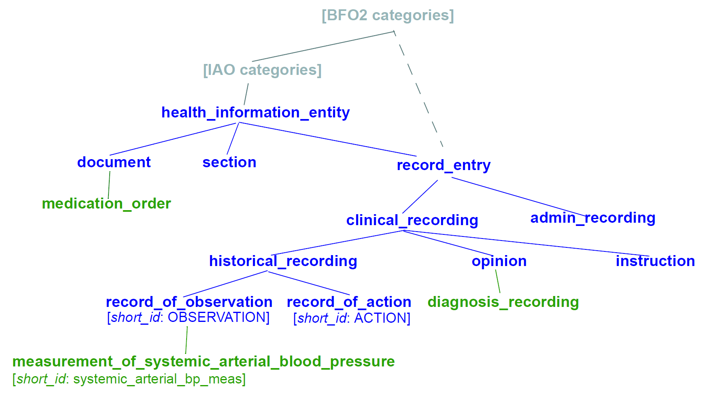

Source Artefact Identification
Overview
The basis for identifying source (i.e. authored) artefacts is to define a number of separate logically identifying properties, as well as a machine identifier. One or more human-readable identifier(s) can be generated from the non-uid identifying properties. For archetypes and templates, the relevant properties are described in the AOM Archetype package, including the ARCHETYPE_HRID class. Related properties are inherited into AUTHORED_ARCHETYPE from the AUTHORED_RESOURCE class of the openEHR Resource Model, including the machine identifier uid and the description, whose lifecycle_state records the development state of the artefact, as well as all other descriptive meta-data.

For other types of artefacts the detailed model will differ, but the principles are the same.
Three distinct groups of properties are shown in the ARCHETYPE_HRID class that underpin the identification scheme described here, as follows:
-
namespaceprovides a way of distinguishing logical identifiers created by different organisations that would otherwise compete in a single semantic identifier space; -
rm_publisher,rm_package,rm_class,concept_idform the basis of the main part of a human-readable identifier, e.g.openEHR-EHR-OBSERVATION.bp_measurement; -
properties supporting versioning:
-
release_version, expressing a 3-part version identifier, e.g. '1.3.0'; -
version_status, of the BASE typeVERSION_STATUS(alpha,beta,release_candidate,released,build), expressing the development state of the version - corresponding to thedescription.lifecycle_stateof the artefact - from which the-alpha,-betaand-rcmodifiers of non-release version ids are derived; -
build_count, incremented at every commit, supporting non-release version ids such as '1.3.0-rc.28', where the build count is 28.
-
The functions semantic_id, physical_id and version_id return respectively the 'interface' archetype HRID as a string, the complete 'physical' archetype HRID (described below) as an Hrid, and the full version string (computed from release_version, version_status and build_count). The functions major_version , minor_version and patch_version extract the various parts of the 3-part release_version property.
The uid property (from AUTHORED_RESOURCE) provides the machine identifier, and is assumed to be a GUID; the build_uid property of AUTHORED_ARCHETYPE is a further GUID identifying each build of the artefact.
Every artefact is assigned a namespace when it is created. The namespace is that of the creating organisation - a Custodian Organisation, but equally a vendor or a project (e.g. com.ehrvendor) - and is not used to distinguish 'managed' from 'unmanaged' artefacts: an artefact without a namespace is too easily taken for a managed one once it circulates. A uid may be assigned at creation as well; a Custodian Organisation assigns a new one when it accepts the artefact (see Distributed Governance). The namespace property of ARCHETYPE_HRID is mandatory. The uid property is optional in the model for legacy (ADL 1.4) artefacts, most of which have neither a uid nor a namespace; such artefacts acquire both when they are migrated to ADL 2.
Different types of human-readable identifiers are used for archetypes, templates and terminology subsets. The following sections describe the formal details of this identification scheme, and how it supports referencing between artefacts.
Formal Model
This section defines the formal grammar for human-readable identifiers (HRIDs) of knowledge artefacts. As described above, more than one human-readable identifier can be constructed from the identifying properties of an artefact (for archetypes, those of the ARCHETYPE_HRID class). The grammar is aligned with the ADL 2 base lexer (see Archetype Definition Language 2).
A modern (ADL 2) identifier is always namespaced, the namespace being prepended to what can be termed a 'local' HRID (i.e. local to a given namespace context). Only a legacy (ADL 1.4) identifier has no namespace.
An HRID consists of a hrid_root (an identifier of the reference model class and domain concept on which the artefact is based) and a version identifier, in the modern form preceded by a namespace. Two identifier forms are defined: a modern (ADL 2) identifier, in which the namespace is mandatory; and a legacy (ADL 1.4) identifier, which has no namespace and a major-only version.
hrid = ( namespace '::' hrid_root '.v' version_id ) (* namespaced (ADL 2) form *)
| ( hrid_root '.v' major_version ) ; (* legacy (ADL 1.4) form: no namespace, major version only *)
namespace = V_REVERSE_DOMAIN_NAME ; (* See IETF RFCs 1035, 1123 and 2181. *)The version identifier (version_id) is defined in Version Numbering.
The hrid production is the lexical form shared by identifiers and references: its version_id may be given at reduced precision. The complete identifier of a modern (ADL 2) artefact - as returned by ARCHETYPE_HRID.physical_id() and recorded in data - carries the full three-part version, with a version modifier for a pre-release version; reduced-precision forms are references (see Referencing).
The namespace above is the publisher organisation reverse domain name. Reverse domain names are used in order to aid lexical sorting of identifiers and also tools that build directory structures based on reverse domain name segments. All artefacts, including archetypes and templates, are assigned a namespace when created, and the namespace of an identifier is never omitted, wildcarded or inferred. An identifier without a namespace is a legacy (ADL 1.4) identifier.
Examples:
-
org.openehr: EHR archetypes library at openEHR.org -
uk.nhs: UK National Health Service -
edu.nci: US National Cancer Institute -
com.ehrvendor: archetype or template created by a vendor
Human-readable Identifier (HRID)
The archetype human-readable identifier consists of two logical parts: an identifier of the reference model (i.e. logical information model) class on which it is based, and an ontological identifier.
The hrid_root is defined by the following grammar rules. The archetype_id production of the openEHR Base Types specification is an application of this grammar.
hrid_root = qualified_rm_class_name '.' concept_id ;
qualified_rm_class_name = rm_publisher '-' rm_package '-' rm_class ;
rm_publisher = V_ALPHANUMERIC_NAME ;
rm_package = V_ALPHANUMERIC_NAME ;
rm_class = V_ALPHANUMERIC_NAME ;
concept_id = V_SEGMENTED_ALPHANUMERIC_NAME ;
V_ALPHANUMERIC_NAME = ? [a-zA-Z][a-zA-Z0-9_]+ ? ; (* regex *)
V_SEGMENTED_ALPHANUMERIC_NAME = ? [a-zA-Z][a-zA-Z0-9_-]+ ? ; (* allows hyphens *)The field meanings are as follows:
-
namespace: reverse domain name of the publishing organisation, e.g.org.openehr,uk.nhs,edu.nci; mandatory in a modern (ADL 2) identifier and absent from a legacy (ADL 1.4) one; -
rm_publisher: id of organisation originating the reference model on which this archetype is based; -
rm_package: identifier of the reference model top-level package closure on which the archetype is based; -
rm_class: name of class or equivalent entity in the reference model on which the artefact is based; -
concept_id: an identifier from an ontology of information artefacts (see below);
The first part takes the form of a 3-part identifier, such as:
-
openEHR-EHR-EVALUATION -
ISO-ISO13606-ENTRY
This historically has been used in openEHR and CEN/ISO 13606-2 to identify the reference model class on which an archetype is based. It includes the publisher of the reference model (e.g. "ISO", "openEHR"), which top level 'closure' is being referred to, and finally which class.
The notion of 'closure' is a top level package from which the focal class can be reached. In general, a given class can be reached from more than one top level package, but an archetype of that class will only be suitable for one of those packages. For example, the openEHR class CLUSTER is used by classes in both the ehr and demographic top level packages. However, an archetype of CLUSTER will usually be designed for use with only one of those packages. The Cluster archetype physical_examination for example will only make sense in data defined by the ehr package. Consequently, it will have an archetype identifier of the form openEHR-EHR-CLUSTER . physical_examination .
The closure part of the identifier could be used by tools to ensure for example that an 'EHR' CLUSTER archetype was never attached to a 'demographic' information item.
Concept Identifier
The second part of the human-readable identifier is a 'short' ontological identifier (known in ADL 1.4 as the 'concept' or 'domain concept'). Such identifiers have historically been natural language words or phrases, typically in a short mnemonic form, e.g. 'bp_measurement' in the archetype identifier ISO-ISO13606-ENTRY.bp_measurement.v1 .
Legacy ADL 1.4 Semantics
Historically in ADL 1.4 (ISO 13606-2:2008), the 'concept' part of the identifier encoded the specialisation hierarchy of concepts as a series of hyphenated segments, e.g. 'problem' and 'problem-diagnosis', with the latter identifying a specialised form of the former.The requirement for the concept name to include specialisations is removed in this specification, as well as the ADL / AOM 1.5 specifications. This enables the domain concept of any artefact to be freely assigned according to the purpose of the artefact.
To allow for the fact that legacy specialised archetypes do in fact include the '-' style of separated domain concept identifier, the '-' character is still allowed, but no longer has any semantic significance.
One consequence is that for archetypes with identifiers conforming to this specification, the level of specialisation can no longer be determined from the identifier. This new approach is in line with how source artefacts are named in object-oriented languages.
Concept Identifier Semantics
The more important aspect of the concept identifier, is its origin and semantics. Historically it has been part of the identifier for archetypes because it is human readable and facilitates debugging of systems where the data contain such identifiers. Clearly a purely ad hoc assignment of a human-readable identifier is not scalable or reliable. Consequently rules and mechanisms for assignment need to be identified.
This specification takes the point of view that the concept part of a knowledge artefact identifier must come from an ontology corresponding to the namespace of the identifier, in other words, an ontology maintained by a Custodian Organisation or some higher authority.
It is not the business of this specification to define the ontology, but we can indicate the general form as being an ontology of information entity types for use in the domain of health. It is assumed that there are nodes within the ontology are related to the classes from the information (i.e. 'reference') model. This leads to an ontology of the form shown below.

This (putative) ontology consists of high-level health information recording entities (black), a set of record entry types derived from the Clinical Investigator Record ontology [1], and domain-specific entities in blue. It is assumed that the top node(s) of the ontology could be related to nodes in a published ontology such as the Information Artefact Ontology (IAO), but this is not a pre-requisite for establishing this ontology. More ideally, its categories would be related to categories in the Basic Formal Ontology (BFO).
The blue node measurement_of_systemic_arterial_blood_pressure (bottom left) describes an entity corresponding to a 'record of systemic arterial blood pressure measurement'. Long names such as this are standard in the ontology community, and are designed to ensure that the name of a category is sufficient to unambiguously define its meaning. Such names are typically too long and unwieldy for the purposes of manageable lexical identifiers such as for archetypes.
We therefore assume that a system of 'short identifiers' is possible within the ontology, where a 'short id' is a synonym for a full node identifier. If we further assume that the ontology is constructed with tools (e.g. Protege) and that ontology identifiers are checked to ensure uniqueness.
Facilities to manage such ontologies should be available either centrally (e.g. openEHR.org or at The Open Biological and Biomedical Ontologies (OBO)), so that every added archetype, template or subset is assigned a short ontological identifier from the ontology.
Existing archetypes can be accommodated within such ontologies in two possible ways. If they have been in use, and data exist containing these identifiers, then their current ontological identifiers can be proposed as the short id for an ontology class defined for the archetype. If there is a clash, a new archetype concept short identifier will be needed, and the archetype will need to be republished under a different identifier.
Need for RM Class Name in Identifier
Theoretically, the Reference Model class identifier part (qualified_rm_class_name above) should not be needed in a well constructed identifier, on the basis that there should never be a clash of concept identifiers, regardless of the RM class, even though they can easily be similar. For example, a reasonable concept_id for an ENTRY (ISO 13606) or OBSERVATION (openEHR) structure archetyped to represent a generic lab result might be 'lab_result'. For the COMPOSITION-level archetype designed to contain any 'lab result' ENTRY or OBSERVATION, a reasonable name would typically be 'lab_report' (or the equivalent in another language).
Unfortunately, for some informational concepts, the appropriate name for the actual core data level can appear to be perfectly reasonable also as a name for a higher level container of the same data. Without an efficient and essentially global ontology construction service or authority available, the inclusion of the qualified RM class name acts as a reasonable guard against such clashes.
Regular Expression
The regular expression below is an informative convenience for implementers - for example to parse or validate an HRID string, or as an OpenAPI / XML-Schema pattern. The normative grammar remains the EBNF above together with the version_id grammar in Version Numbering; where the two disagree, the EBNF prevails.
It parses an HRID into its segments (the named capture groups). The core rm_publisher-rm_package-rm_class.concept_id and at least the major version_id (.v plus the major number) are required; the namespace and the minor and patch version parts are optional and are captured when present. The expression is deliberately lenient, so it accepts a modern (ADL 2) identifier, a legacy (ADL 1.4) identifier and a reduced-precision reference alike. To validate a complete ADL 2 identifier - rather than merely parse one - additionally require the namespace together with a full three-part version_id; the legacy ADL 1.4 identifier is the remaining well-formed case, namespaceless with a major-only version. A namespaceless string that carries a minor or patch version matches the lenient expression but is well-formed neither as an identifier nor, outside the source artefact that contains it, as a reference - an ADL 2 identifier always carries its namespace, and so does an ADL 2 reference in operational artefacts, data and queries (see Referencing), so the only namespaceless identifier is the legacy ADL 1.4 identifier (major version only). Forms that carry no version at all, or an empty version ("any version"), are query wildcards defined by the openEHR Archetype Query Language, not identifiers or references matched here. A namespace is never a wildcard: an empty or omitted namespace does not mean 'any namespace', since such a match cannot be used safely (see Referencing).
PCRE flavour, with named capture groups corresponding to the grammar productions:
^(?:(?<namespace>[a-zA-Z0-9-]+(?:\.[a-zA-Z0-9-]+)+)::)?(?<rm_publisher>[a-zA-Z][a-zA-Z0-9_]+)-(?<rm_package>[a-zA-Z][a-zA-Z0-9_]+)-(?<rm_class>[a-zA-Z][a-zA-Z0-9_]+)\.(?<concept_id>[a-zA-Z][a-zA-Z0-9_-]+)\.v(?<version_id>(?<major_version>[0-9]+)(?:\.(?<minor_version>[0-9]+)(?:\.(?<patch_version>[0-9]+)(?<version_modifier>-(?:rc|alpha|beta)(?:\.(?<build_count>[0-9]+))?)?)?)?)$Equivalent form for engines without named or non-capturing groups (e.g. a W3C XML Schema pattern, which anchors the whole value implicitly):
([a-zA-Z0-9\-]+(\.[a-zA-Z0-9\-]+)+::)?[a-zA-Z][a-zA-Z0-9_]+-[a-zA-Z][a-zA-Z0-9_]+-[a-zA-Z][a-zA-Z0-9_]+\.[a-zA-Z][a-zA-Z0-9_\-]+\.v[0-9]+(\.[0-9]+(\.[0-9]+(-(rc|alpha|beta)(\.[0-9]+)?)?)?)?The namespace sub-expression approximates V_REVERSE_DOMAIN_NAME (IETF RFCs 1035, 1123, 2181); a stricter DNS-label form may be substituted where required. The numeric parts follow V_NUMBER (one or more digits).
References
-
[1] T. Beale and S. Heard, “An Ontology-based Model of Clinical Information.,” in Proceedings MedInfo 2007, K. K. et al., Ed., IOS Publishing, Aug. 2007, pp. 760–764. [Online]. Available: http://www.openehr.org/publications/health_ict/MedInfo2007-BealeHeard.pdf